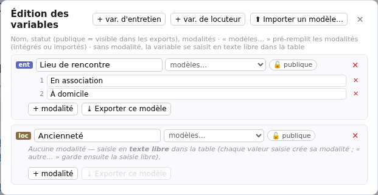
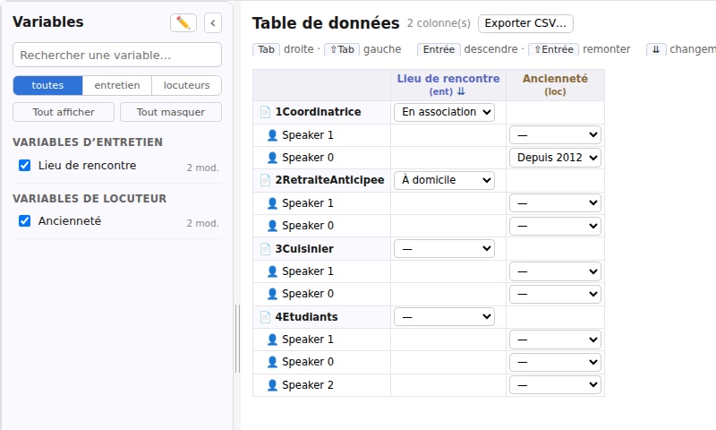
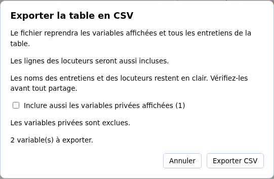

Importer et traiter → Corpus et Entretien
Définir les variables et saisir les données
Les variables servent à décrire les entretiens et leurs participants avec des réponses comparables : lieu de rencontre, ancienneté dans une association ou état de relecture, par exemple. Elles complètent les thèmes, qui sont associés à des passages du texte.
Cette page décrit le travail dans un corpus local. Pour essayer sur des données fictives, utilisez votre copie de Entretiens déjà importés, puis l’entretien 1Coordinatrice.
Choisir ce que la variable décrit
La variable est la question à renseigner ; ses modalités sont les réponses proposées. La valeur est la réponse choisie pour un entretien ou un locuteur.
| Portée | Exemple | Où se trouve la réponse ? |
|---|---|---|
| Entretien | Lieu de rencontre : « En association » ou « À domicile ». | Une valeur pour l’entretien entier. |
| Locuteur | Ancienneté : « Depuis 2012 » pour Fatima. | Une valeur pour chaque locuteur de cet entretien. |
La définition est commune au corpus, mais la création de la variable ne remplit aucune réponse. Chaque entretien ou locuteur doit être renseigné. Une variable reçoit une seule valeur à la fois pour chacun d’eux ; choisir une autre réponse remplace la précédente.
La portée est fixée par le bouton utilisé à la création. L’édition ne propose pas de la changer ensuite : si vous avez choisi la mauvaise portée, créez une variable du bon type et reprenez les valeurs nécessaires. Ne supprimez l’ancienne qu’après vérification.
Relier un locuteur à une personne du corpus ne copie pas automatiquement ses réponses dans les autres entretiens de cette personne.
Créer une variable et ses réponses possibles
- Dans la vue Corpus de Importer et traiter, ouvrez l’onglet Données.
- Dans le panneau Variables, cliquez sur le crayon Éditer les variables (nom, statut, modalités).
- Dans Édition des variables, cliquez sur + var. d’entretien ou + var. de locuteur, selon la portée choisie.
- Saisissez le nom, puis appuyez sur Entrée ou quittez le champ pour l’appliquer.
- Si vous connaissez déjà les réponses possibles, cliquez sur + modalité, nommez chaque réponse et quittez son champ. Répétez pour les autres.
Pour l’exemple, créez Lieu de rencontre, de portée entretien, avec les modalités En association et À domicile. Ajoutez ensuite Ancienneté, de portée locuteur, sans modalité pour commencer par une saisie libre.

Le menu modèles… peut ajouter une liste de modalités préétablie, par exemple Statut d’activité ou des classes d’âge. Il ajoute des réponses possibles ; il ne remplit pas les entretiens et ne remplace pas les réponses déjà saisies. Si la variable porte encore le nom « Nouvelle variable », le modèle lui donne aussi son nom.
Fermez avec la croix du haut. Les changements de définition sont appliqués au fil des actions ; cette croix ne les annule pas. Vous pouvez aussi ouvrir la même édition depuis le crayon de l’onglet Données d’un entretien.
Saisir dans un entretien
- Ouvrez l’entretien avec le crayon de sa carte et choisissez l’onglet Données.
- Dans Valeurs · cet entretien, renseignez les variables de portée entretien.
- Dans Valeurs · par locuteur, repérez le bon nom et renseignez ses variables.
Dans 1Coordinatrice, choisissez par exemple En association pour le lieu de rencontre. Pour essayer la saisie de l’ancienneté de Fatima, utilisez sa fiche ; si les voix n’ont pas encore été renommées, il s’agit de Speaker 0. Vous pouvez d’abord renommer les locuteurs.
- Avec des modalités : choisissez une réponse dans la liste.
- Sans modalité : saisissez du texte, par exemple Depuis 2012, puis appuyez sur Entrée ou quittez le champ.
- Pour une réponse absente de la liste : choisissez autre…, saisissez-la et quittez le champ. Elle devient une modalité disponible dans le corpus pour cette variable.
Utilisez des libellés cohérents : « Depuis 2012 » et « depuis 2012 » peuvent devenir deux modalités différentes. Une nouvelle saisie identique à une modalité existante réutilise celle-ci.
Les valeurs de l’entretien sont enregistrées automatiquement. Attendez à jour avant de fermer l’application, puis rouvrez l’entretien pour vérifier le résultat.
Saisir et consulter dans la table du corpus
Revenez au Corpus par le fil de navigation, puis ouvrez Données. Dans un corpus local, la table est directement éditable :
- Les lignes d’entretien reçoivent les valeurs de portée entretien.
- Les lignes de locuteur, sous chaque entretien, reçoivent les valeurs de portée locuteur.
- Les cases de l’autre portée restent vides : ce ne sont pas des cellules à remplir.
La table et le panneau de l’entretien montrent les mêmes valeurs. Choisissez une réponse ou saisissez-la comme dans l’entretien. La table se met à jour après l’enregistrement ; en cas de refus, contrôlez le message de la cellule au lieu de supposer que la valeur a été appliquée.

Dans le panneau de gauche, cochez les variables à afficher. toutes, entretien et locuteurs limitent les colonnes par portée. Tout masquer et Tout afficher changent seulement leur visibilité, sans supprimer les variables ni leurs valeurs.
Rechercher une variable… aide à retrouver son nom dans ce panneau ; cette recherche ne filtre pas les entretiens ni les valeurs de la table. Les variables d’entretien sont regroupées avant celles de locuteur. L’interface actuelle ne propose pas de commande pour réordonner leurs définitions ou leurs modalités : prévoyez, si nécessaire, l’ordre des modalités lors de leur création.
Se déplacer au clavier dans la table
Tabulation et Maj + Tabulation passent à la cellule suivante ou précédente sur la ligne. Entrée descend dans la colonne ; Maj + Entrée remonte. Les déplacements sautent les cases qui ne correspondent pas à la portée de la variable.
Exporter la table vers un tableur
- Dans le panneau Variables, cochez les colonnes à exporter. Choisissez toutes, entretien ou locuteurs selon les portées souhaitées.
- Cliquez sur Exporter CSV… au-dessus de la table.
- Vérifiez le nombre de variables retenues. Les variables privées affichées sont exclues par défaut ; cochez Inclure aussi les variables privées affichées seulement si vous souhaitez conserver leurs réponses dans ce fichier.
- Cliquez sur Exporter CSV, puis choisissez le nom et l’emplacement du fichier.

Ouvrez le fichier dans Excel, LibreOffice Calc ou un autre tableur. Si celui-ci demande des réglages d’import, choisissez UTF-8 et le séparateur point-virgule.
Le CSV contient les lignes d’entretien et, si elles sont affichées, les lignes de locuteur. Les colonnes Entretien, Type de ligne et Locuteur permettent de les distinguer. Le nom de l’entretien est répété sur ses lignes de locuteur pour faciliter le tri. Une cellule vide reste vide, et les intitulés des variables précisent leur portée.
La recherche d’un nom dans le panneau Variables ne réduit pas à elle seule l’export : ce sont les colonnes cochées et le filtre de portée qui comptent. Les données sont relues avant l’enregistrement ; un entretien indisponible ou une réponse incohérente bloque l’export avec un message, au lieu de produire un fichier silencieusement incomplet.
Les noms des entretiens et des locuteurs inclus restent en clair. Le CSV n’est pas pseudonymisé automatiquement. Vérifiez les noms et les réponses avant de partager le fichier, particulièrement si vous avez inclus des variables privées. Exporter ne modifie pas le corpus ; le CSV n’en est pas une sauvegarde complète.
Appliquer une valeur à plusieurs entretiens
Le bouton ⇊ dans l’en-tête d’une colonne de portée entretien ouvre Modifier en lot. Cette commande propose une même valeur pour les entretiens du corpus ; elle ne sert pas à remplir d’un coup les variables des locuteurs.
- Vérifiez la variable indiquée dans le titre et choisissez la valeur à appliquer.
- Pour préserver les réponses déjà renseignées, cochez Seulement les entretiens sans valeur. Ce filtre est décoché par défaut.
- Relisez la liste des entretiens ciblés et celle des entretiens ignorés.
- Cliquez sur Appliquer, puis lisez le bilan avant de Fermer.
Sans le filtre, la valeur commune peut remplacer les réponses déjà saisies. La valeur « — », ou une saisie libre vide, efface les valeurs des cibles. Fermer la fenêtre après l’application n’annule pas le lot. Si un entretien est refusé, les autres peuvent tout de même avoir été modifiés : vérifiez le bilan.
Comprendre publique et privée
Une nouvelle variable est publique. Dans Édition des variables, cliquez sur son bouton de statut pour la rendre privée, ou pour la rendre publique à nouveau.
Le statut privé exclut cette variable des exports de lecture, comme les documents TXT, HTML ou Word contenant des variables. Le CSV l’exclut aussi par défaut, mais vous pouvez choisir de l’y inclure explicitement. Ce statut ne masque pas sa colonne dans le corpus et ne réserve pas l’accès à une seule personne.
« Privée » ne signifie pas « absente de tous les fichiers ». Le corpus et un export .sonal complet peuvent conserver la variable et ses réponses. Avant de partager, vérifiez le contenu du fichier produit et son format ; le statut ne retire pas non plus les informations sensibles déjà présentes dans la transcription ou l’enregistrement.
Renommer, effacer une valeur ou supprimer
Le crayon ouvre l’édition des définitions. Renommer une variable ou une modalité change son libellé dans tout le corpus, sans demander de ressaisir les réponses qui l’utilisent. Pour corriger une réponse d’un seul entretien, changez plutôt sa cellule.
- Effacer une valeur : choisissez — dans la liste, ou validez un champ libre vide. La variable et les modalités restent disponibles. Une case vide signifie « non renseigné », pas une réponse « Non ».
- Supprimer une modalité : cliquez sur sa croix dans l’édition. Si elle est encore utilisée, SonalPi refuse sa suppression et indique des usages à traiter.
- Supprimer une variable : cliquez sur la croix de sa ligne. Ses valeurs et ses usages dans les cas ou familles peuvent empêcher la suppression.
Une définition inutilisée peut être supprimée sans confirmation supplémentaire. Préférez réaffecter ou effacer les réponses après vérification, plutôt que supprimer pour corriger une seule cellule. Le texte des entretiens n’est pas modifié par ces opérations.
Réutiliser un modèle, sans exporter les réponses
Dans l’édition, Exporter ce modèle enregistre le nom et les modalités d’une variable dans un fichier JSON. Indiquez le nom du modèle, cliquez sur Exporter, puis choisissez où conserver le fichier. Les valeurs des entretiens et des locuteurs ne sont pas incluses.
Pour réutiliser ce fichier, cliquez sur Importer un modèle…. Il devient disponible dans Mes modèles du menu modèles…, sur ce poste. Sélectionnez-le sur la variable à compléter : l’import seul ne crée pas de variable et ne renseigne aucune réponse.
Pour exporter les réponses, utilisez Exporter CSV… dans la table. Exporter ce modèle ne remplit pas ce rôle et n’est pas une sauvegarde de votre corpus.